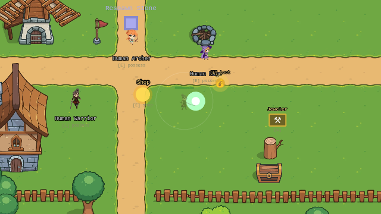

You are not the body. You are what's inside.
Possess anything. Learn from everything. Defend what's yours.
Devolik · devolik13@gmail.com · playable in any browser
Possess creatures, earn their skills, master 13 schools of resonance magic.
Return as yourself. Defend your loved ones from the Void, seal the warp rifts — with everything you learned out there.
Progress is never abstract: every skill learned «over there» is a weapon for the world you actually care about.

Steampunk × fantasy with one consistent rulebook — and a finale twist we keep for the call.
Vertical slice: prologue → first possessions → elemental boss with phases → warp rift → lab defense → credits. 10 seconds from link to gameplay — no install.
Browser MMOs retain for a decade when the loop is sharp. Web = zero-friction acquisition.
Indie-born MMOs can grow into sustainable, 10-year businesses without AAA budgets.
Hidden identity is a mass-market thrill. Nobody has shipped it inside a persistent RPG world.
Essence positions as «the possession MMO» — a one-line elevator pitch players retell to each other (our trailer test: viewers describe the loop unprompted).
The build is one click away — 10 seconds from link to gameplay.
[ itch.io private build link ]
Devolik · devolik13@gmail.com